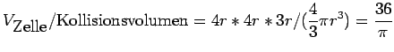
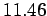

Nächste Seite: Bemerkung: Aufwärts: Implizite Raumpartitionierung Vorherige Seite: Flüssigkeitspartikel Inhalt
 |

mal so viel Raum nach potentiellen Kollisionspartnern durchsucht wird, wie für die Physik überhaupt in Frage kommt. Bei der Kollision mit Kontrollpartikeln wird kein Partikelabstand gemessen, sondern der Abstand zur Kontrollpartikelebene (siehe Abb. 3.5). Ist dieser negativ, so tritt das Kontrollpartikel in Aktion. Wie in Abb. 3.4 dargestellt, wird der positive Abstand durch die Orientierung des Dreiecks bestimmt, das zur Initialisirung des Kontrollpartikels verwendet wurde.